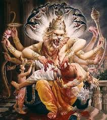

hiranyakashapu wadh

the half-man half-lion. Jaya and his brother Vijaya are cursed by the sage Sanaka when they stop him from seeing Vishnu, and will be reborn three times as rakshsas (asura) to be killed by Vishnu. In their first demonic birth they become Hiranyaksha and Hiranyakashipu. Hiranyakashipu persecuted everyone for their religious beliefs including his son who was a Vishnu follower. he was protected by Brahma, and could by no means be killed. Vishnu descended as an anthropomorphic incarnation, with the body of a man and head and claws of a lion. He disemboweled Hiranyakashipu, and brought an end to the persecution of human beings including his devotee Prahlada.